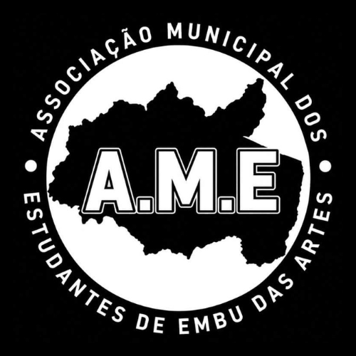

Ensino Fundamental
Do 8º e 9º ano, você que já sente no dia a dia as falhas do sistema escolar: o seu lugar é aqui, a sua voz importa.

AMESó uma LEI municipal do Passe Livre garantirá esse direito. Estudantes e professores unidos na AME vão virar o jogo.
Vem pra luta com a genteLutamos pela aprovação do Passe Livre Estudantil irrestrito e pela garantia de vagas no transporte escolar para todos os bairros.
Quando a tarifa do ônibus pesa no bolso, cada estudante carrega esse peso sozinho. A AME existe para acabar com essa solidão: o direito só vem com lei municipal e com a nossa mobilização.
Exigimos também a ampliação imediata de vagas em creches, para que jovens mães e pais estudantes não sejam forçados a abandonar a sala de aula.
Assine e organizeEstudantes de Embu das Artes, chegou a nossa hora. Durante tempo demais, a nossa cidade, berço de grandes artistas, de trabalhadores resilientes e de uma cultura popular vibrante, assistiu passivamente ao silenciamento sistêmico da sua juventude. As escolhas sobre a qualidade da nossa educação, sobre o transporte público precário e sobre o mercado de trabalho que nos aguarda sempre foram tomadas por engravatados, sem que pudéssemos expressar nossas reais reivindicações.
Fomos negligenciados pelo poder público, sem nenhuma entidade disposta a nos representar e defender. Quando a tarifa do ônibus pesava no bolso, quando a infraestrutura da escola ameaçava ruir sobre nós e as oportunidades eram roubadas, cada estudante era forçado a carregar esse peso sozinho. Mas essa era de solidão e fragmentação chegou ao seu fim. O silêncio, enfim, deu lugar à nossa união.
Anunciamos o nascimento histórico da Associação Municipal dos Estudantes de Embu das Artes: a AME! Ela não surge para ser um mero clube recreativo, uma sigla decorativa ou uma instituição burocrática inofensiva. A AME surge para ser uma verdadeira entidade de luta, nascida da rebeldia de uma juventude que se recusa a herdar a precarização e o sucateamento do ensino. A educação não é um favor concedido por governantes, mas um direito inalienável que deve ser conquistado com a força da nossa mobilização coletiva.
Do 8º e 9º ano, você que já sente no dia a dia as falhas do sistema escolar: o seu lugar é aqui, a sua voz importa.
Você que divide a vida entre as cansativas jornadas de estudo e o medo do desemprego: a AME é o seu escudo inviolável.
Você que cruza as fronteiras do município e enfrenta horas no trânsito por um diploma: a AME é o seu porto seguro.
Nossas portas estão escancaradas aos professores, aos profissionais da educação e a qualquer apoiador genuíno da causa estudantil. A nossa aliança é intergeracional.
A AME será um movimento vivo e pulsante. Com arte, rima, batucada e panfletagem nas praças, vamos provar que a verdadeira política não é feita a portas fechadas. Ela se faz na rua, pela juventude organizada. A partir de agora, a caneta está na nossa mão, e quem vai desenhar o rumo dessa cidade somos nós: os estudantes.
Mais do que uma lista de reivindicações, estas 10 pautas são o nosso projeto concreto para transformar a realidade da juventude de Embu das Artes. Nossos direitos nunca serão dados como favores; serão arrancados pela força da nossa organização coletiva.
A cidade não pode ser uma barreira para quem quer estudar. Lutamos pela aprovação do Passe Livre Estudantil irrestrito e pela garantia de vagas no transporte escolar para todos os bairros. Exigimos também a ampliação imediata de vagas em creches, para que jovens mães e pais estudantes não sejam forçados a abandonar a sala de aula.
O estudante embuense tem o direito de sonhar com a universidade sem precisar cruzar o estado. Lutamos pela implantação de uma FATEC, de um Instituto Federal (IF) e de um campus da UNIFESP em nossa cidade. Para garantir o acesso do filho do trabalhador a essas vagas, exigimos a reativação imediata dos cursinhos pré-vestibulares públicos e gratuitos da Prefeitura.
Rejeitamos a substituição precarizada de professores e livros por telas e aplicativos que não ensinam. A tecnologia deve ajudar, não sucatear o aprendizado! Lutamos pela infraestrutura física digna, exigindo a climatização urgente das salas de aula, e defendemos a manutenção e valorização do Ensino Regular Noturno, respeitando o estudante que trabalha o dia todo e precisa de uma escola que o acolha à noite.
A escola só é pública se for para todos. Cobramos a criação e ampliação de espaços socioeducacionais com atendimento especializado, multidisciplinar e humanizado para crianças e estudantes com deficiências (PCDs) e neurodivergentes (TEA, TDAH, entre outros). Exigimos estrutura, profissionais de apoio e uma pedagogia que inclua de verdade.
A sala de aula deve ser um ambiente de emancipação, não de medo. Exigimos o combate rigoroso dentro das escolas à violência contra a mulher, à misoginia, à LGBTfobia, ao preconceito racial e ao racismo religioso. Defendemos a implementação real de educação sexual baseada na ciência para promover o respeito, prevenir abusos e combater a desinformação.
A juventude periférica produz arte e exige espaço! Lutamos pela criação de espaços socioculturais abertos e pela fundação da Casa da Juventude. Cobramos o apoio estrutural e financeiro da Prefeitura aos movimentos culturais vivos da nossa cidade: batalhas de rima, dancehall, hip-hop, teatro independente, graffiti e slam.
O estudante precisa conhecer sua cidade e explorar o mundo. Defendemos a valorização curricular da história, do folclore e das fortes influências indígenas de Embu das Artes, incluindo visitas frequentes aos nossos pontos turísticos. Lutamos pela retomada de programas históricos de lazer público, como o "Embu na Onda do Mar", e exigimos o fomento municipal a programas de intercâmbio estudantil e cultural.
Lutamos por quadras vivas e de portas abertas. Exigimos incentivos reais e investimento da prefeitura no esporte amador estudantil, com a criação de novos espaços de lazer adequados nas periferias. Defendemos também políticas públicas de bolsas e suporte financeiro, nutricional e técnico para jovens atletas embuenses de alto rendimento e potenciais atletas olímpicos.
O estudante não pode ser refém do subemprego, de aplicativos sem direitos ou da falta de perspectivas. Pressionamos o poder público por uma reindustrialização sustentável e pela atração de empresas que gerem empregos de qualidade e de alta renda no município. Exigimos oportunidades justas e protegidas de Primeiro Emprego e Jovem Aprendiz para os nossos estudantes.
A pressão e as desigualdades adoecem nossa juventude. Lutamos pela contratação efetiva de psicólogos e assistentes sociais para atuação direta nas escolas públicas, garantindo acolhimento psicológico real. O combate aos vícios e às drogas deve ser feito através da educação, da cultura, do esporte e da rede de saúde e assistência, jamais com punitivismo vazio que afasta o jovem da escola.
Fortaleça a nossa base e faça parte da linha de frente pelo futuro da juventude de Embu das Artes. Só a força inquebrável dos estudantes organizados é capaz de derrubar as barreiras do presente.
VIVA A AME! A NOSSA LUTA APENAS COMEÇOU! VENHA FAZER HISTÓRIA!